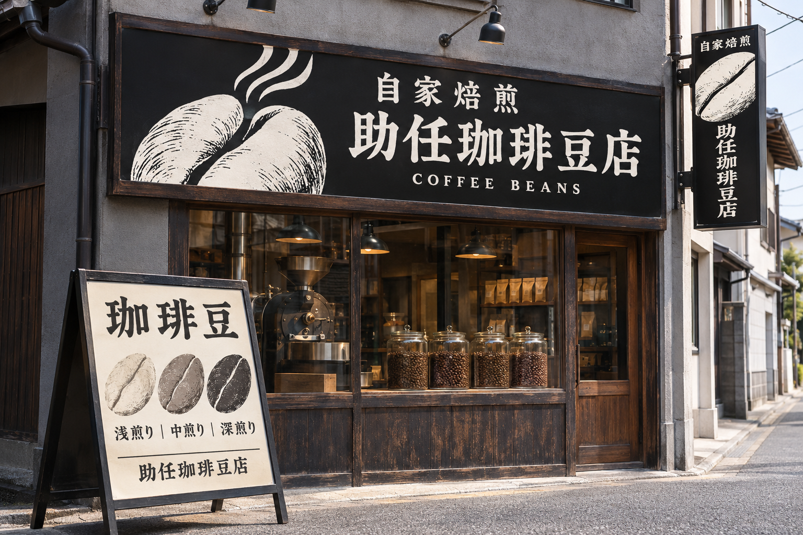
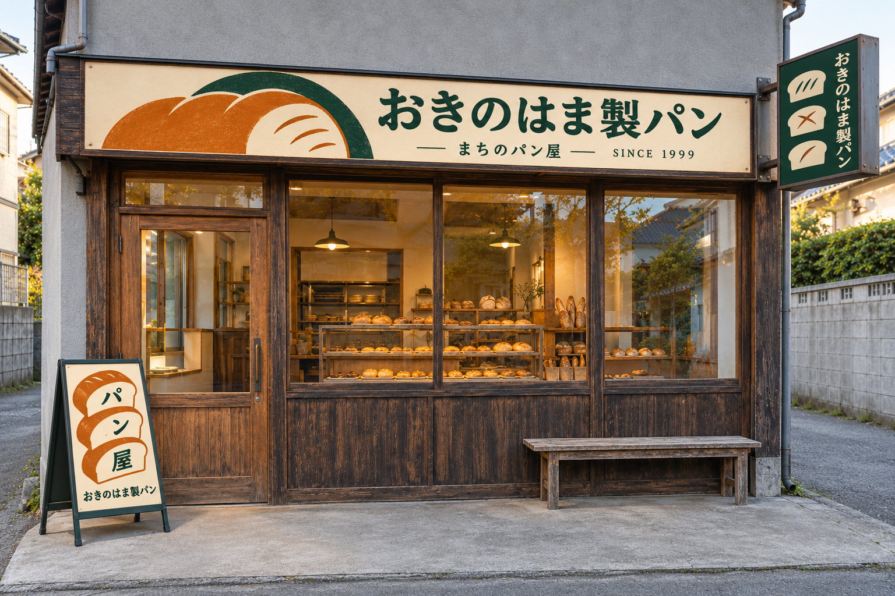

01｜自家焙煎の珈琲豆店
助任珈琲豆店
白黒の大きな豆と、立ち上る香りを組み合わせました。「自家焙煎」と店名を見せ、豆を買える店だと伝える案です。スタンドには焙煎の深さを並べました。

看板デザインの見た目案｜2026.11.03
助任珈琲豆店と、おきのはま製パンの案です。横長の看板・壁から突き出す袖看板・入口のA型スタンドを、それぞれの店に合わせて描き分けました。
01｜自家焙煎の珈琲豆店
白黒の大きな豆と、立ち上る香りを組み合わせました。「自家焙煎」と店名を見せ、豆を買える店だと伝える案です。スタンドには焙煎の深さを並べました。

02｜まちのパン屋
焼き色のパンを大きく描き、生成りと深緑でまとめました。横長は店名、袖看板はパンの形、スタンドは「パン屋」の字を主役にしています。
